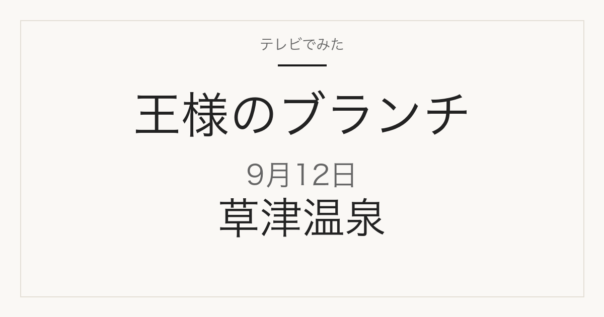

この記事には広告・アフィリエイトリンクが含まれる場合があります。
2026年9月12日（土）放送
王様のブランチ
草津温泉・チャンピオングルメほか
草津温泉の新定番プラン満喫旅／ごはんクラブのチャンピオングルメ
番組公式で確認できたコーナー構成を掲載しています。店名・商品名・価格は、2026年9月12日時点の番組公式の案内には記載がありません。放送で確認できたものからこのページに追記します。
放送予定のコーナーを見る
午前の部
草津温泉・映画・BOOK
店名・商品名は未発表
- テレビ×ミセス— TVコーナー
- 週末トラベル— 草津温泉の新定番プラン満喫旅。TBSの放送回ページには「極上旅館の絶品しゃぶしゃぶ」「蛇口から映えソーダ」とあります。旅館名は公表されていません。
- 映画— 『ルックバック』より、出口夏希さんと蒔田彩珠さんにインタビュー
- BOOK— MAZZEL『MAZZEL 1st photobook with ZEAL』、早見和真さん『春までのセンセイ』
午後の部
チャンピオングルメ・買い物の達人ほか
- ごはんクラブ— 「間違いなくうまい！！ チャンピオングルメ」。番組表には世界一の絶品ピザ、日本一のグルメバーガー、先月オープンのクロワッサン専門店とあります。いずれも店名は公表されていません。
- 買い物の達人— 柿谷曜一朗さんと角田夏実さんが10万円でお買い物。購入商品は公表されていません。
- トレンド部— インパクト抜群！ 最新フォトジェニックスポット③
- 語りたいほどマンガ好き— NON STYLE 井上さんのおすすめマンガ
- 物件リサーチ・深掘りサーチ— レインボーさんと本田響矢さんが分譲物件とお家で楽しめるアイテムをチェック
- ゲスト— BALLISTIK BOYZ
上の内容は、TBS「王様のブランチ」番組公式の「つぎの放送」欄、TBSの2026年9月12日放送回ページ、および同日のTBS番組表11時59分枠（いずれも2026年9月12日確認）に記載されているものです。番組内容は変更になる場合があります。
放送後は、このページで店名・商品名を確認できます
放送で確認できたものから、このページに追記します。ブックマークしておけば、同じURLのまま最新の内容を見られます。
- チャンピオングルメで紹介される店名と料理名
- 買い物の達人で購入される商品と価格
- 草津温泉で訪れる旅館・施設の名前
掲載するのは、番組公式か店舗・メーカーの公式情報で確認できたものだけです。SNSの投稿だけを根拠にした断定はしません。
関連記事
出典
TBS「王様のブランチ」番組公式（つぎの放送）
2026年9月12日 TBS番組表（Gガイド）の11時59分枠
当サイトは番組公式サイトではありません。放送内容は変更になる場合があります。